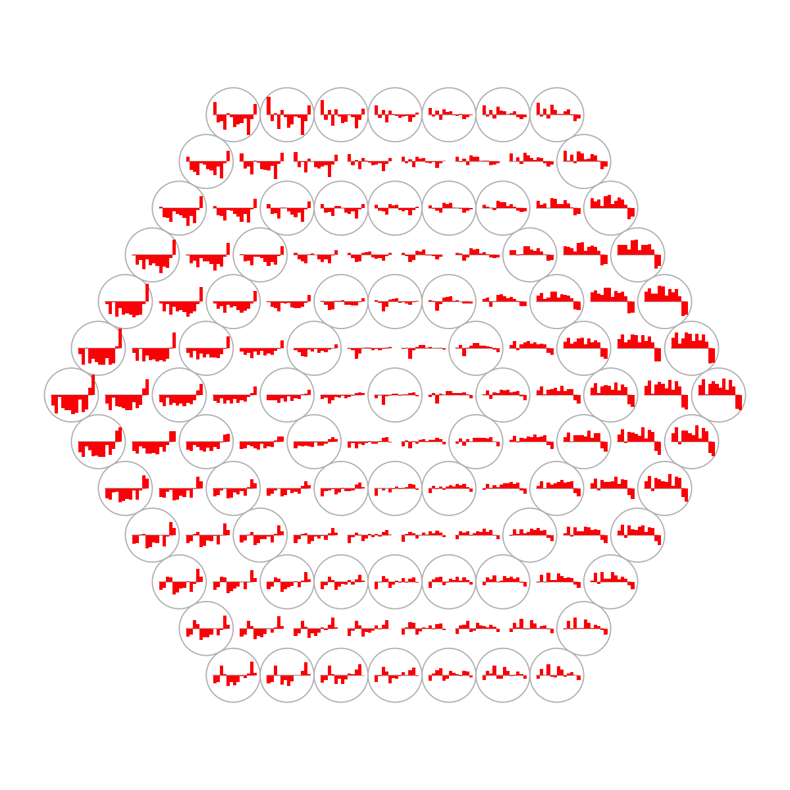
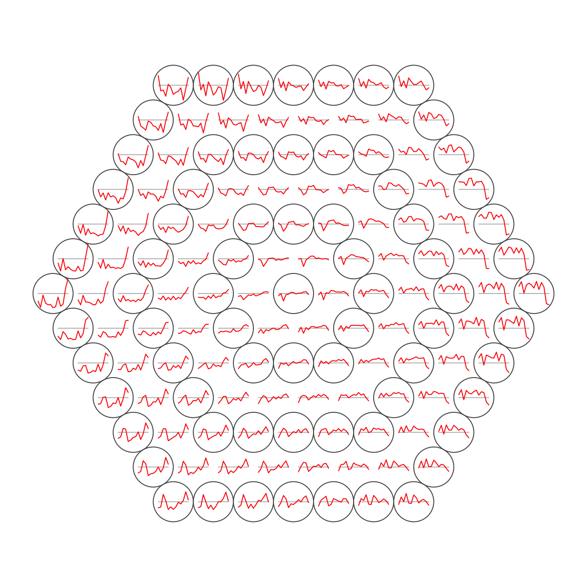
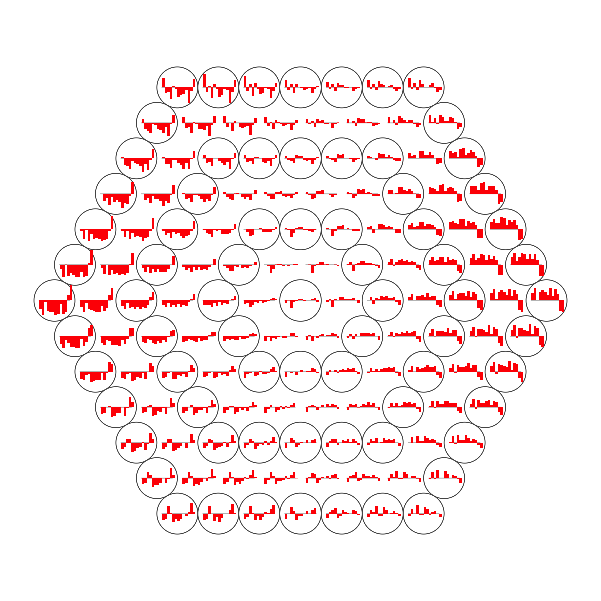

Demo for human cell type evolutionary profile dataset from Sardar et al
Notes:
# This is a demo for human cell type evolutionary profile dataset from Sardar et al
#
# This dataset (available from http://www.ncbi.nlm.nih.gov/pubmed/24692656) contains protein innovation usage (PIU) evolutionary profiles for 492 unique cell types, cell lines and tissues (in short, 492 cell types) over the human evolutionary lineage (13 key phyletic divisions in the NCBI taxonomy). These 13 are (from human towards cellular organisms): "Human", "Theria (Live birth Mammals)", "Mammalia (Placental mammals, Marsupials and Monotremes)", "Amniota (Four limbed vertebrates with terrestrial eggs)", "Euteleostomi (Bony vertebrates)", "Chordata (Have a notochord/spinal column)", "Deuterostomia (Mouth comes second, after anus)", "Coelomata (Body cavity forming)", "Bilateria (Bilateral symmetry forming)", "Eumetazoa (True tissue forming animals)", "Opisthokonta (Animal-like and Fungi-like)", "Eukaryota", and "Cellular organisms".
#
# The dataset is stored in a form of matrix of 492 cell types X 13 taxonomy/divisions.
# The purpose of this demo is to group/cluster cell types with similar evolutionary profiles (over human ancestry) using self-organising algorithm.
# With the package 'supraHex', users can also easily visualise results at each step of the analysis.
###############################################################################
# (I) Load the package and import data
library(supraHex)
## import data file Sardar_PIU.txt
data <- read.table(file="http://supfam.org/supraHex/Sardar_PIU.txt", header=T, row.names=1, sep="\t", check.names=F) # PIU matrix of 492 cell types X 13 taxonomy
## check data dimensions and types
dim(data)
[1] 492 13
str(data)
'data.frame': 492 obs. of 13 variables:
$ Human : num -0.0508 -1.0535 -0.8006 -0.7468 -0.9453 ...
$ Theria (Live birth Mammals) : num 0.658 -0.861 -0.754 -0.728 0.565 ...
$ Mammalia (Placental mammals, Marsupials and Monotremes): num 0.0683 -0.5504 -0.8316 2.4421 1.7404 ...
$ Amniota (Four limbed vertebrates with terrestrial eggs): num 1.375 0.357 0.895 0.854 1.013 ...
$ Euteleostomi (Bony vertebrates) : num 0.59 -1.891 -1.315 -1.615 -0.705 ...
$ Chordata (Have a notochord/spinal column) : num 0.318 -1.411 -1.881 -1.321 0.243 ...
$ Deuterostomia (Mouth comes second, after anus) : num 0.514 -1.357 -0.343 -0.534 -0.109 ...
$ Coelomata (Body cavity forming) : num 0.318 -1.735 -0.359 -0.745 0.135 ...
$ Bilateria (Bilateral symmetry forming) : num -0.112 -0.385 -1.285 -0.107 -0.278 ...
$ Eumetazoa (True tissue forming animals) : num 0.0866 -1.4478 -0.6449 -1.0234 -0.3559 ...
$ Opisthokonta (Animal-like and Fungi-like) : num 1.152 -0.776 0.694 -0.496 0.729 ...
$ Eukaryota : num -0.156 2.088 1.345 1.345 0.238 ...
$ Cellular organisms : num -0.707 1.132 0.387 0.729 -0.125 ...
# (II) Train the supra-hexagonal map with input data only
sMap <- sPipeline(data)
Start at 2015-02-12 17:20:53
First, define topology of a map grid (2015-02-12 17:20:53)...
Second, initialise the codebook matrix (127 X 13) using 'linear' initialisation, given a topology and input data (2015-02-12 17:20:53)...
Third, get training at the rough stage (2015-02-12 17:20:53)...
1 out of 3 (2015-02-12 17:20:53)
updated (2015-02-12 17:20:53)
2 out of 3 (2015-02-12 17:20:53)
updated (2015-02-12 17:20:53)
3 out of 3 (2015-02-12 17:20:53)
updated (2015-02-12 17:20:53)
Fourth, get training at the finetune stage (2015-02-12 17:20:53)...
1 out of 11 (2015-02-12 17:20:53)
updated (2015-02-12 17:20:53)
2 out of 11 (2015-02-12 17:20:53)
updated (2015-02-12 17:20:53)
3 out of 11 (2015-02-12 17:20:53)
updated (2015-02-12 17:20:53)
4 out of 11 (2015-02-12 17:20:53)
updated (2015-02-12 17:20:53)
5 out of 11 (2015-02-12 17:20:53)
updated (2015-02-12 17:20:53)
6 out of 11 (2015-02-12 17:20:53)
updated (2015-02-12 17:20:53)
7 out of 11 (2015-02-12 17:20:53)
updated (2015-02-12 17:20:53)
8 out of 11 (2015-02-12 17:20:53)
updated (2015-02-12 17:20:53)
9 out of 11 (2015-02-12 17:20:53)
updated (2015-02-12 17:20:53)
10 out of 11 (2015-02-12 17:20:53)
updated (2015-02-12 17:20:53)
11 out of 11 (2015-02-12 17:20:53)
updated (2015-02-12 17:20:53)
Next, identify the best-matching hexagon/rectangle for the input data (2015-02-12 17:20:53)...
Finally, append the response data (hits and mqe) into the sMap object (2015-02-12 17:20:53)...
Below are the summaries of the training results:
dimension of input data: 492x13
xy-dimension of map grid: xdim=13, ydim=13
grid lattice: hexa
grid shape: suprahex
dimension of grid coord: 127x2
initialisation method: linear
dimension of codebook matrix: 127x13
mean quantization error: 3.02542877610304
Below are the details of trainology:
training algorithm: batch
alpha type: invert
training neighborhood kernel: gaussian
trainlength (x input data length): 3 at rough stage; 11 at finetune stage
radius (at rough stage): from 4 to 1
radius (at finetune stage): from 1 to 1
End at 2015-02-12 17:20:53
Runtime in total is: 0 secs
visHexMulComp(sMap, title.rotate=5, title.xy=c(0.25,1), gp=grid::gpar(cex=0.6), zlim=c(-2,2), colormap="jet")
sWriteData(sMap, data, filename="Output_Sardar_PIU.txt")
## As you have seen, a figure displays the multiple components of trained map in a sample-specific manner. You also see that a txt file Output_Sardar_PIU.txt has been saved in your disk. The output file has 1st column for your input data ID (an integer; otherwise the row names of input data matrix), and 2nd column for the corresponding index of best-matching hexagons (i.e. cell type clusters). You can also force the input data to be output (see below).
sWriteData(sMap, data, filename="Output_Sardar_PIU_2.txt", keep.data=T)
# (III) Visualise the map, including built-in indexes, data hits/distributions, distance between map nodes, and codebook matrix
visHexMapping(sMap, mappingType="indexes")

## As you have seen, the smaller hexagons in the supra-hexagonal map are indexed as follows: start from the center, and then expand circularly outwards, and for each circle increase in an anti-clock order.
visHexMapping(sMap, mappingType="hits")
## As you have seen, the number represents how many input data vectors (cell types) are hitting each hexagon, the size of which is proportional to the number of hits.
visHexMapping(sMap, mappingType="dist")
## As you have seen, map distance tells how far each hexagon is away from its neighbors, and the size of each hexagon is proportional to this distance.
visHexPattern(sMap, plotType="lines")

## As you have seen, line plot displays the patterns associated with the codebook matrix. If multple colors are given, the points are also plotted. When the pattern involves both positive and negative values, zero horizental line is also shown.
visHexPattern(sMap, plotType="bars")

## As you have seen, bar plot displays the patterns associated with the codebook matrix. When the pattern involves both positive and negative values, the zero horizental line is in the middle of the hexagon; otherwise at the top of the hexagon for all negative values, and at the bottom for all positive values.
# (IV) Perform partitioning operation on the map to obtain continuous clusters (i.e. cell type meta-clusters) as they are different from cell type clusters in an individual map node
sBase <- sDmatCluster(sMap)
visDmatCluster(sMap, sBase)
sWriteData(sMap, data, sBase, filename="Output_base_Sardar_PIU.txt")
## As you have seen, each cluster is filled with the same continuous color, and the cluster index is marked in the seed node. Although different clusters are coded using different colors (randomly generated), it is unavoidable to have very similar colors filling in neighbouring clusters. In other words, neighbouring clusters are visually indiscernible. In this confusing situation, you can rerun the command visDmatCluster(sMap, sBase) until neighbouring clusters are indeed filled with very different colors. An output txt file Output_base_Sardar_PIU.txt. This file has 1st column for your input data ID (an integer; otherwise the row names of input data matrix), and 2nd column for the corresponding index of best-matching hexagons (i.e. cell type clusters), and 3rd column for the cluster bases (i.e. cell type meta-clusters). You can also force the input data to be output.
sWriteData(sMap, data, sBase, filename="Output_base_Sardar_PIU_2.txt", keep.data=T)
output <- visDmatHeatmap(sMap, data, sBase, base.separated.arg=list(col="black"), base.legend.location="bottomleft", colormap="jet", KeyValueName="PIU z-score", labRow=NA, keep.data=T, srtCol=20, cexCol=0.8)
## As you have seen, heatmap is used to visualise patterns seen in cell types within each meta-cluster/base. Row side bar indicates the cell type meta-clusters/bases. The returned variable "output" (NOT a txt file) has 1st column for your input data ID (an integer; otherwise the row names of input data matrix), and 2nd column for the corresponding index of best-matching hexagons (i.e. cell type clusters), and 3rd column for the cluster bases (i.e. cell type meta-clusters). Note: it has rows in the same order as visualised in the heatmap
# (V) Reorder the taxonomy-specific components of the map to delineate relationships between taxonomy
sReorder <- sCompReorder(sMap, metric="euclidean")
Start at 2015-02-12 17:21:04
First, define topology of a map grid (2015-02-12 17:21:04)...
Second, initialise the codebook matrix (40 X 13) using 'linear' initialisation, given a topology and input data (2015-02-12 17:21:04)...
Third, get training at the rough stage (2015-02-12 17:21:04)...
1 out of 403 (2015-02-12 17:21:04)
41 out of 403 (2015-02-12 17:21:04)
82 out of 403 (2015-02-12 17:21:04)
123 out of 403 (2015-02-12 17:21:04)
164 out of 403 (2015-02-12 17:21:04)
205 out of 403 (2015-02-12 17:21:04)
246 out of 403 (2015-02-12 17:21:04)
287 out of 403 (2015-02-12 17:21:04)
328 out of 403 (2015-02-12 17:21:04)
369 out of 403 (2015-02-12 17:21:04)
403 out of 403 (2015-02-12 17:21:04)
Fourth, get training at the finetune stage (2015-02-12 17:21:04)...
1 out of 1612 (2015-02-12 17:21:04)
162 out of 1612 (2015-02-12 17:21:04)
324 out of 1612 (2015-02-12 17:21:04)
486 out of 1612 (2015-02-12 17:21:04)
648 out of 1612 (2015-02-12 17:21:04)
810 out of 1612 (2015-02-12 17:21:04)
972 out of 1612 (2015-02-12 17:21:04)
1134 out of 1612 (2015-02-12 17:21:05)
1296 out of 1612 (2015-02-12 17:21:05)
1458 out of 1612 (2015-02-12 17:21:05)
1612 out of 1612 (2015-02-12 17:21:05)
Next, identify the best-matching hexagon/rectangle for the input data (2015-02-12 17:21:05)...
Finally, append the response data (hits and mqe) into the sMap object (2015-02-12 17:21:05)...
Below are the summaries of the training results:
dimension of input data: 13x13
xy-dimension of map grid: xdim=10, ydim=4
grid lattice: rect
grid shape: sheet
dimension of grid coord: 40x2
initialisation method: linear
dimension of codebook matrix: 40x13
mean quantization error: 23.4740407770882
Below are the details of trainology:
training algorithm: sequential
alpha type: invert
training neighborhood kernel: gaussian
trainlength (x input data length): 31 at rough stage; 124 at finetune stage
radius (at rough stage): from 2 to 1
radius (at finetune stage): from 1 to 1
End at 2015-02-12 17:21:05
Runtime in total is: 1 secs
visCompReorder(sMap, sReorder, title.rotate=5, title.xy=c(0.25,1), gp=grid::gpar(cex=0.6),zlim=c(-2,2), colormap="jet")
 ## As you have seen, reordered components of trained map is displayed. Each component illustrates a taxonomy-specific map and is placed within a two-dimensional rectangular lattice. Across components/taxonomy, cell types with similar patterns are mapped onto the same position of the map. Geometric locations of components delineate relationships between components/taxonomy, that is, taxonomy with the similar profiles are placed closer to each other.
# (VI) Build and visualise the bootstrapped tree
tree_bs <- visTreeBootstrap(t(data), nodelabels.arg=list(cex=0.6))
Start at 2015-02-12 17:21:06
First, build the tree (using nj algorithm and euclidean distance) from input matrix (13 by 492)...
Second, perform bootstrap analysis with 100 replicates...
Finally, visualise the bootstrapped tree...
Finish at 2015-02-12 17:21:06
Runtime in total is: 0 secs
## As you have seen, neighbour-joining tree is constructed based on pairwise euclidean distance matrices between samples. The robustness of tree branching is evaluated using bootstraping. In internal nodes (also color-coded), the number represents the proportion of bootstrapped trees that support the observed internal branching. The higher the number, the more robust the tree branching. 100 means that the internal branching is always observed by resampling characters.
## As you have seen, reordered components of trained map is displayed. Each component illustrates a taxonomy-specific map and is placed within a two-dimensional rectangular lattice. Across components/taxonomy, cell types with similar patterns are mapped onto the same position of the map. Geometric locations of components delineate relationships between components/taxonomy, that is, taxonomy with the similar profiles are placed closer to each other.
# (VI) Build and visualise the bootstrapped tree
tree_bs <- visTreeBootstrap(t(data), nodelabels.arg=list(cex=0.6))
Start at 2015-02-12 17:21:06
First, build the tree (using nj algorithm and euclidean distance) from input matrix (13 by 492)...
Second, perform bootstrap analysis with 100 replicates...
Finally, visualise the bootstrapped tree...
Finish at 2015-02-12 17:21:06
Runtime in total is: 0 secs
## As you have seen, neighbour-joining tree is constructed based on pairwise euclidean distance matrices between samples. The robustness of tree branching is evaluated using bootstraping. In internal nodes (also color-coded), the number represents the proportion of bootstrapped trees that support the observed internal branching. The higher the number, the more robust the tree branching. 100 means that the internal branching is always observed by resampling characters.
)
){kind=link}
){kind=link}
){kind=link}
){kind=link}
){kind=link}
){kind=link}
){kind=link}
){kind=link}
){kind=link}